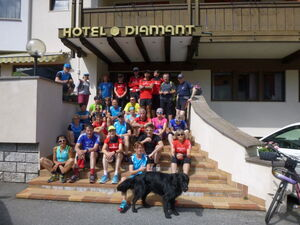

Alpinrunner
Laufwoche Südtirol 2019
Naturns
Laufwoche Südtirol 2019
vom Sonntag 05. bis Sonntag 12. Mai

Wir haben Doppelzimmer und Einzelzimmer mit Halbpension im Hotel Diamant, zusätzliche Einzeltimmer im benachbartem Garni Schmidhof zur Verfügung und geniessen das Nachtessen alle zusammen im Hotel Diamant***
Die Laufwoche in Naturns beinhaltet folgende Leistungen:
- 7 Übernachtungen im Doppelzimmer / Einzelzimmer
- Begrüssungsapero am Ankunftstag
- reichaltiges Abendessen inkl. Tischgetränk, Frühstücksbuffet
- Inklussivleistungen vom Hotel
- geführte Lauftrainings in Gruppen
- Mobilcard Südtirol zur freien Fahrt mit Bus und Bahn
Bericht der Laufwoche 2017
Die verfügbaren Zimmer sind bereits gebucht, weitere Anmeldungen auf Anfrage
Teilnehmer
- Marco & Petra Jäger (Leiter)
- Brigitte Eggerling ( Leiter)Thomas Pfeffer
- Martin & Isabella Lüönd (Martin Leiter)
- Dani Zähner (Leiter) & Köbi Schmid
- Katharina Fodor & Rolf Bianco
- Barbara Miller & Robi Rickli
- Martin Ledermann & Iris Capatt
- Monica & Peter Hug
- Christian Schmid, Thomas Steger
- Maria Schmittel
- Micheline Pang
- Sabine Haas
- Urs Ulmann
- Corina Müller Nüesch, Petra Bättig
- Barbara Schuler
- Jochen Holzschuh
- Corinne Arnold
- Toni Friedrich
- Jean-Marie Zogg
- Silvia Pasina
- Ruedi Wirz
- Albert Thöni & Helene Arquint